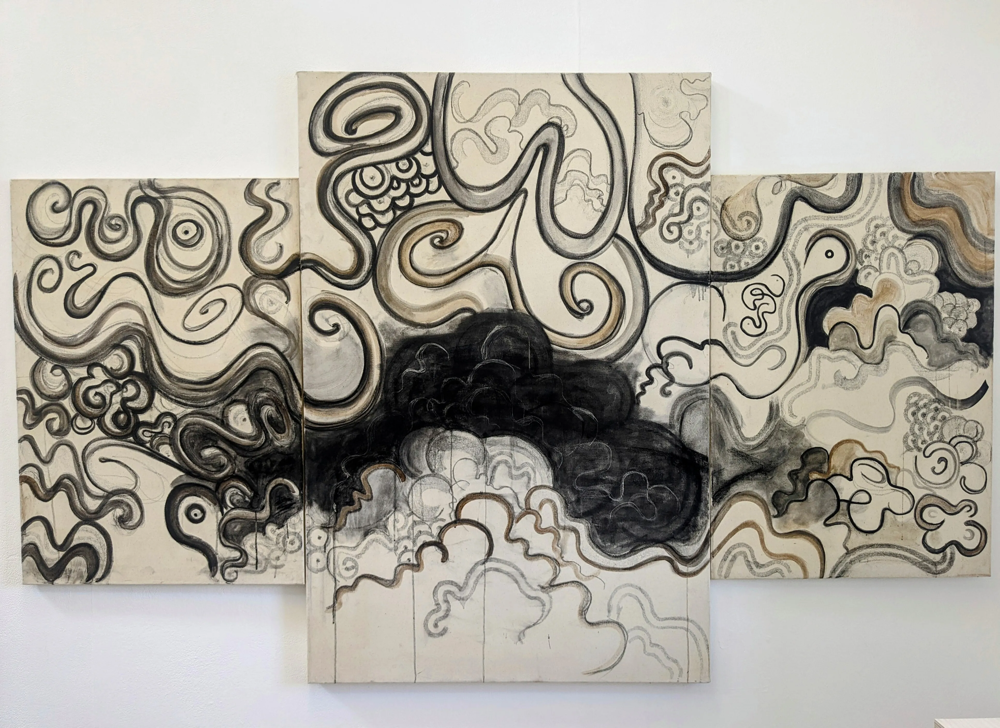
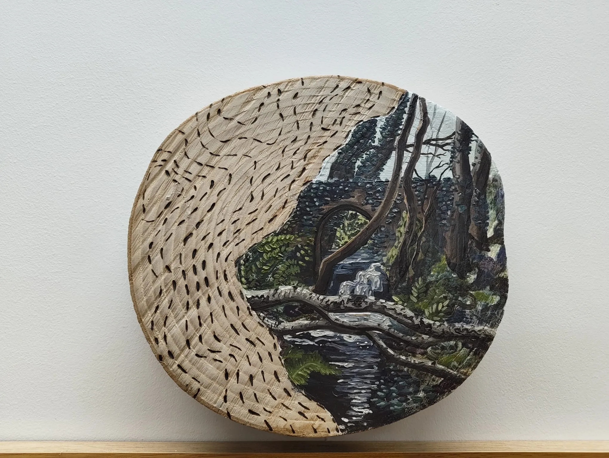
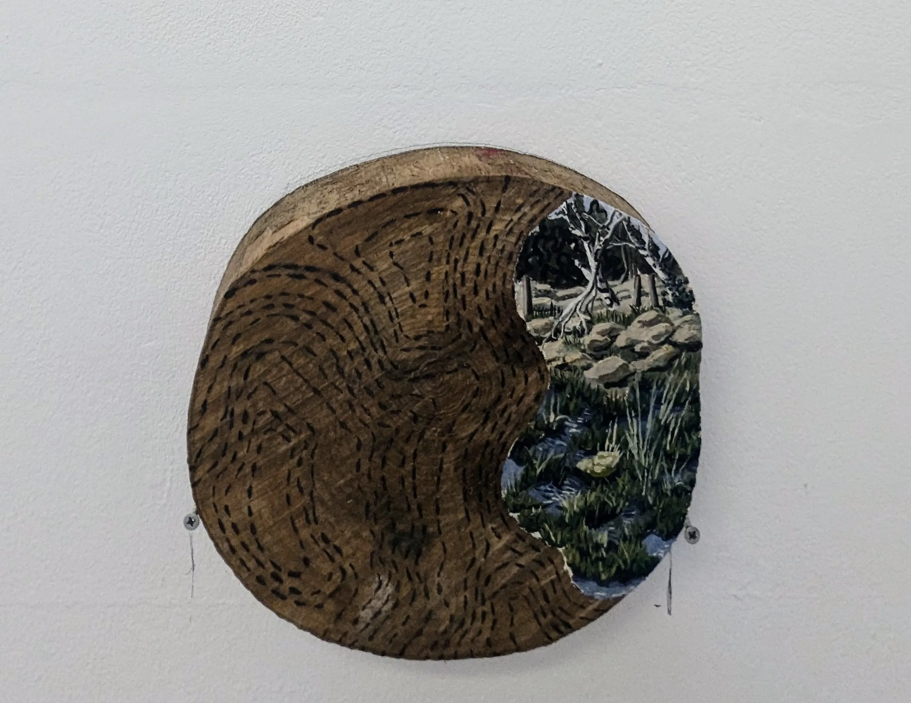
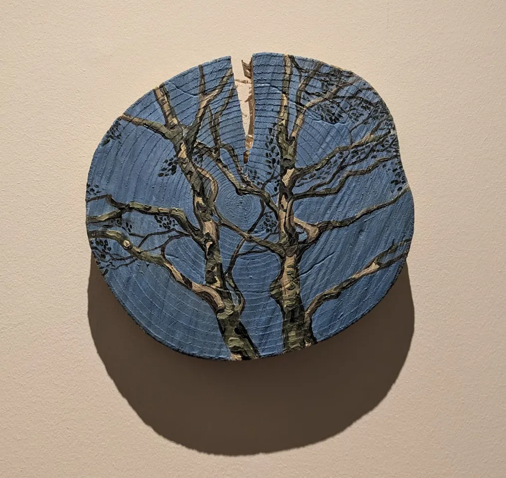
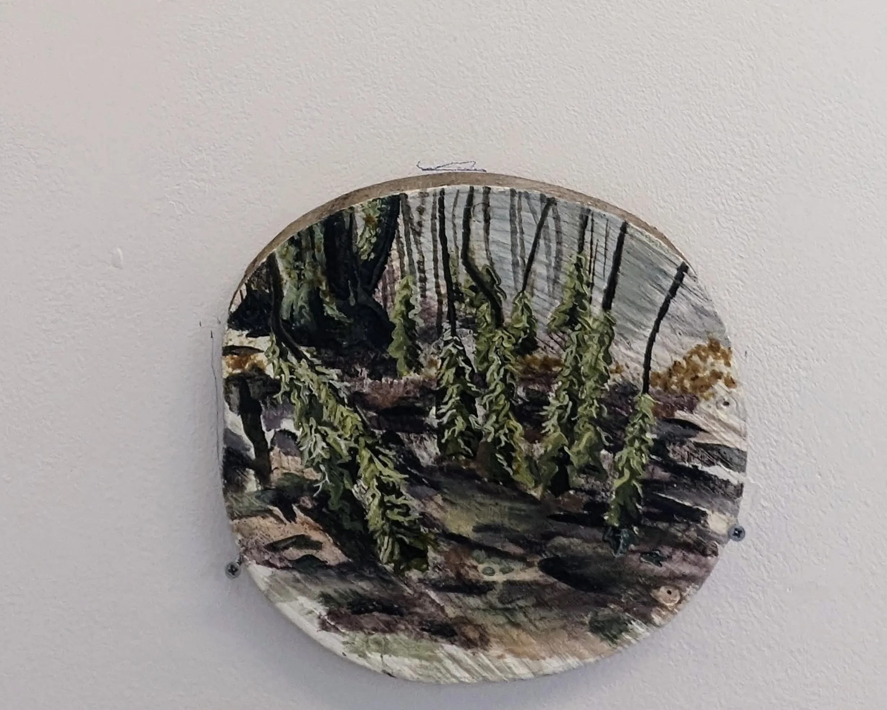
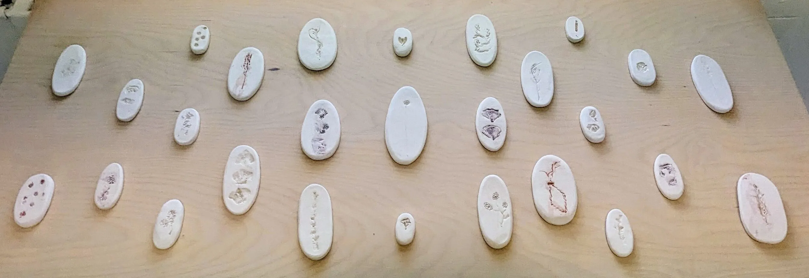

Soiled maps
Soil and charcoal on canvas

Sorcha Hamilton is an artist based in County Galway, Ireland. Much of her work experiments with solitary scenes rarely involved figures to create a more isolating experience.
This project focuses on exploring one site. The place where this series is based is in the woods behind her family home. The work explores the peace and loneliness that exists when living in rural Ireland, with elements of Christianity and Paganism to show the spiritual aspects of living in quiet thought and solitude. These elements come through in the aesthetic, and the calming and ritualistic making of the work. Much of the exploration behind these pieces comes from walking and harvesting the overgrown land of some of the natural resources. All the materials that make the end-product are from this site; natural materials can bend and change over time, which suggests an added aspect of change and growth in the work itself.
Soil and charcoal on canvas

Oil and soil on wood. 25cm in diameter

Oil and soil on wood. 23cm diameter

Oil on wood. 25cm diameter

Oil on wood. 25cm diameter.

Ceramics and soil.
